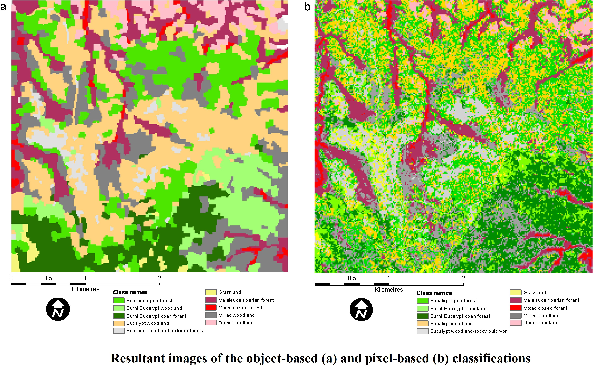
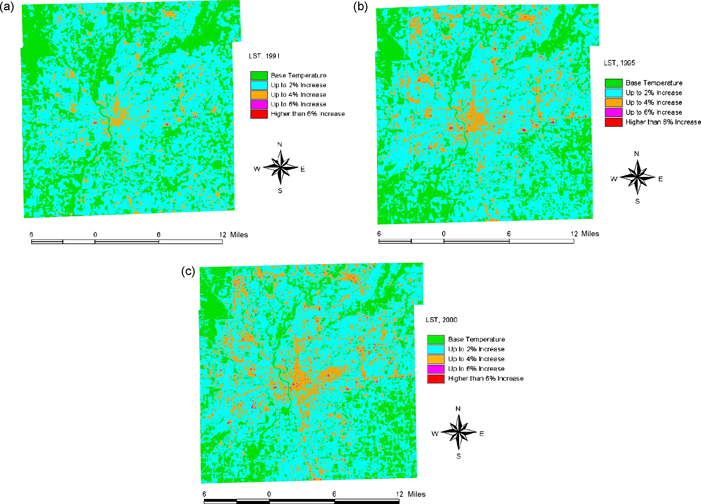
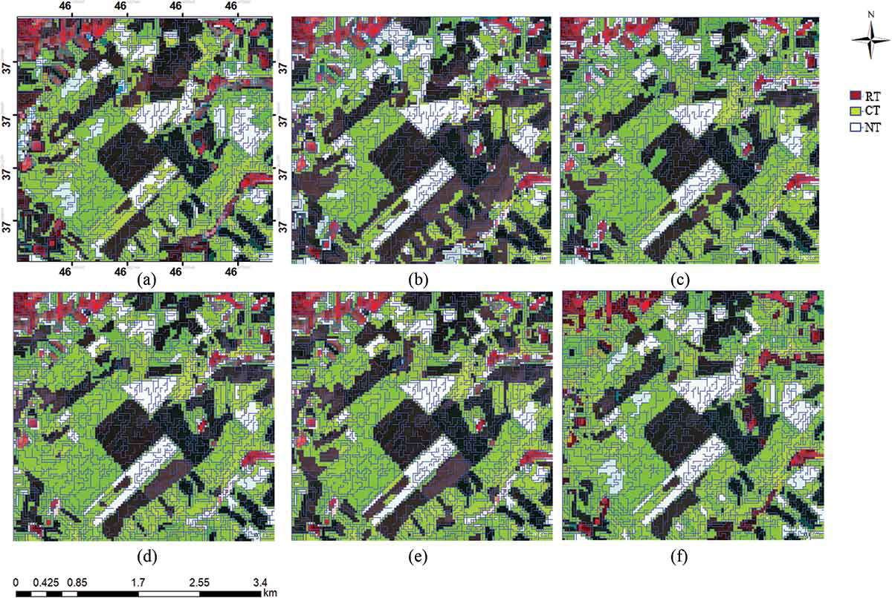

8 Week 8 - Classification II
8.1 Summary
This week’s focus remained on exploring additional classification methods with particular attention given to object-based image analysis and sub-pixel analysis. Below, I will explore these in details below.
8.1.1 Object Based Image Analysis (OBIA)
In contrast to pixel-based classification methods that classify individual pixels directly, object-based classification first aggregates image pixels into spectrally homo-genous image objects using an image segmentation algorithm which clusters pixels based on spatial proximity and colour similarity and resulting in classification of individual objects (Liu and Xia (2010)).
8.1.2 Sub-Pixel Analysis
Sub-pixel analysis examines the contents of a single pixel, determining the mix of land cover types within it. It calculates the percentage of each land cover type per pixel by comparing reflectance values.This method helps classify pixels, particularly when they contain multiple land cover types. It estimates the portion of each pixel covered by different materials. Unlike multi-pixel analysis, sub-pixel analysis concentrates on individual pixels, essential for satellite images with low resolution where each pixel covers a larger land area.
The study by Whiteside, Boggs, and Maier (2011) explains the object-based & pixel type of analysis.In the pixel-based classification, each pixel is classified separately, whereas in the object-based classification, all pixels that belong to one GIS object are grouped together. The result of the pixel grouping is like a smoothing of the data. Resultant noise in the pixel-based classification shows why OBIA has great advantage over it.

8.1.3 Accuracy
In remote sensing and machine learning, we use different methods to check how accurate our models are. The one we pick depends on what we’re using the model for. Some common ones are user’s accuracy, producer’s accuracy, and F1 score which we obtain from confusion matrix - which is a table showing how many pixels were classified correctly or incorrectly for each class. Here is a brief overview of all these parameters
| Producer’s Accuracy | User’s Accuracy | Overall Accuracy | Kappa Coefficient | |
|---|---|---|---|---|
| Explanation | Measures the proportion of actual positive cases that were correctly identified positive cases. | Measures the proportion of correctly identified positive cases out of all cases classified as positive. | Measures the proportion of all correctly classified pixels out of all observations. | Measures the agreement between observed and expected accuracy levels when there is no agreement by chance. |
| Formula | \(\frac{TP}{TP+FN}\) | \(\frac{TP}{TP+FP}\) | \(\frac{TP+TN}{TP+FP+TN+FN}\) | \(\frac{p_o-p_e}{1-p_e}\) |
8.2 Applications
One of the studies that came across while reading about Sub-Pixel Analyis was of Weng and Lu (2008) in which they studied the urbanization effect on land surface temperature (LST) in USA. In this study they gathered the satellite images from different time intervals (in years) and they analyzed the rise in urbanization with the land surface temperature. The study demonstrated that Urbanization created an evolved inverse relationship between impervious and vegetation coverage, and brought about new LST patterns because of LST’s correlations with both impervious and vegetation coverage.

Also, one of the application of Object-based image analysis came across during my reading was the study done by Najafi et al. (2018) in Iran to determine the crop residue estimate using Landsat data by applying the OBIA. To process the data, they applied the object-based image processing steps which include segmentation and classification and developed intelligent objects. Further, after applying OBIA algorithms results were validated against ground control data set by field survey.

8.3 Reflections
This week touched on the disparity between real-world features and satellite data, underscoring the importance of employing classification methods such as subpixel and object-based approaches to accurately interpret the data. Additionally, it’s crucial to refrain from depending solely on commonly used metrics without verifying their validity. We need to assess whether the coefficients we utilize are suitable for the specific task at hand. Also, the impact of spatial autocorrelation in classification systems offers a fresh perspective, particularly when dealing with other spatial data. Reflecting on all of this, I feel content and pleased to know the practical applications of remote sensing data, particularly in urban environments.